Inspire vida.
Viva em ação.
Adesão, técnica e dados clínicos em um só app.
Do consultório à startup
Ciência clínica, engenharia e inovação.
-
stethoscope01 · A dor clínica
+33 anos no consultório
Nascido da prática da Dra. Geralda Magela Costa Calazans, pneumologista pediátrica.
-
school02 · TCC nota máxima
Engenharia no CEFET-MG
Desenvolvido por Pedro Costa Calazans, Engenheiro de Computação, aprovado com nota máxima.
-
rocket_launch03 · Startup 2026
Top 10 de 63 projetos
Selecionada no hub PUC Minas Startups 2026 e acelerada pela Neo Ventures.
Cada terapia no seu ritmo
Prevenção, biológico e alívio em 1 toque.
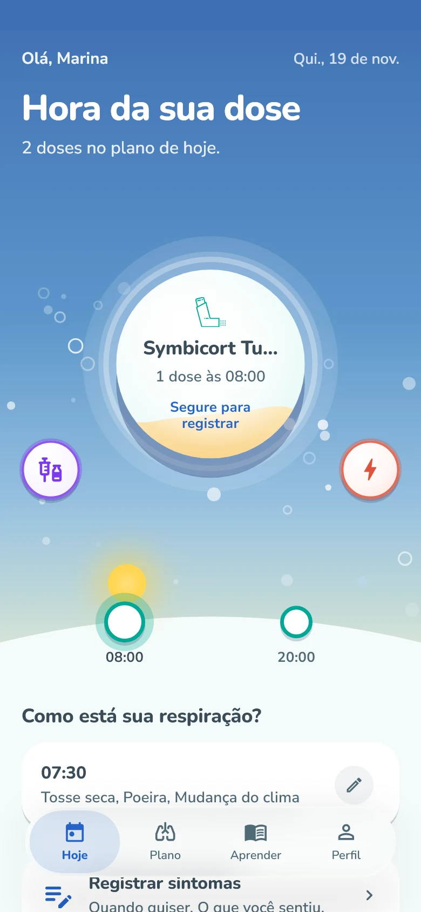
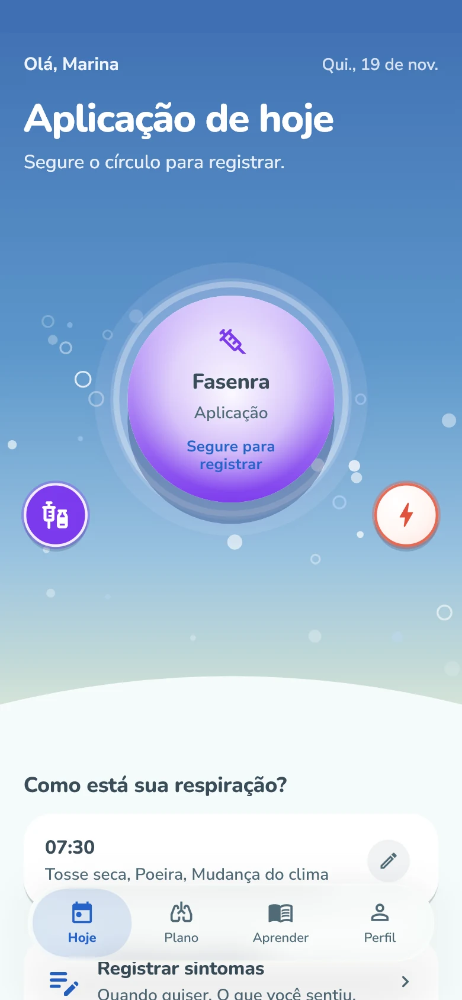
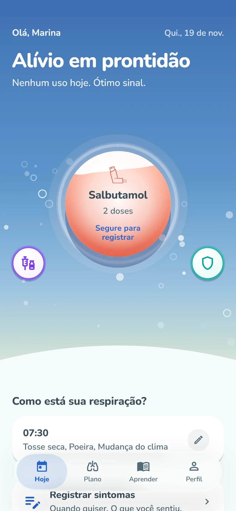
Nunca sem medicação
Avisa antes da bombinha acabar.
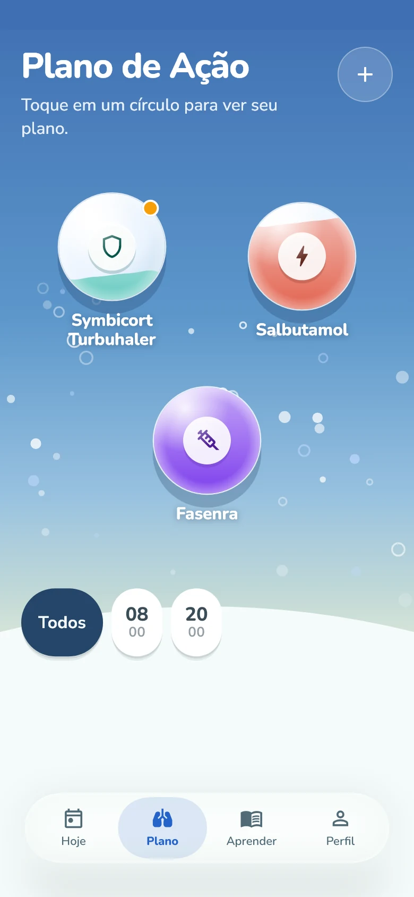
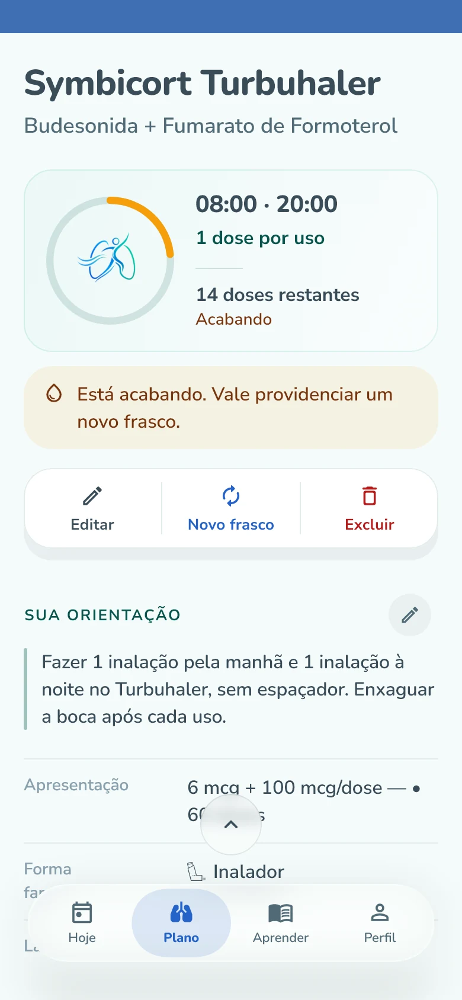
Cadastro em segundos
Escaneie o código ou busque na ANVISA.
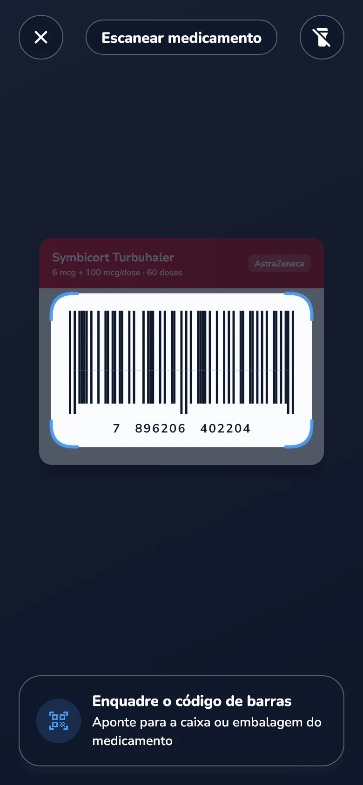
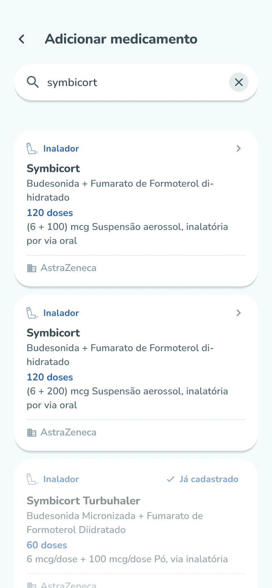
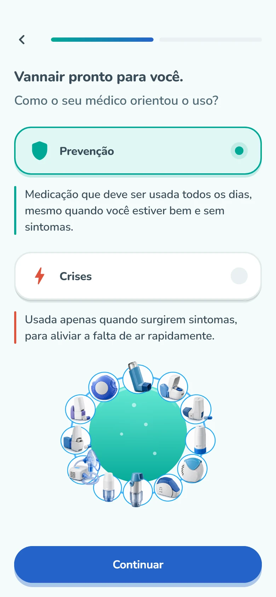
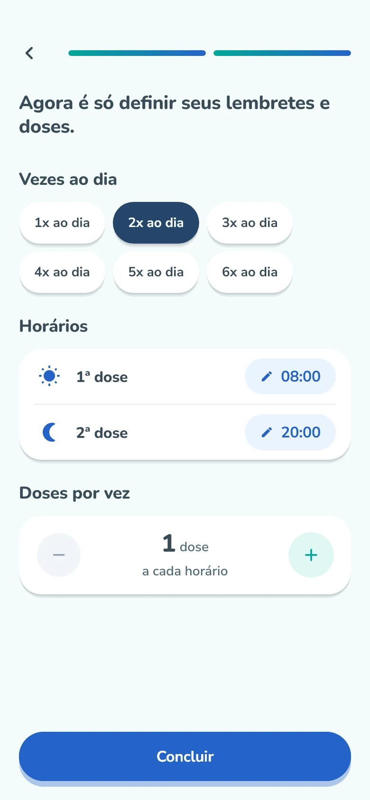
Dose que chega ao pulmão
Guias visuais passo a passo por dispositivo.
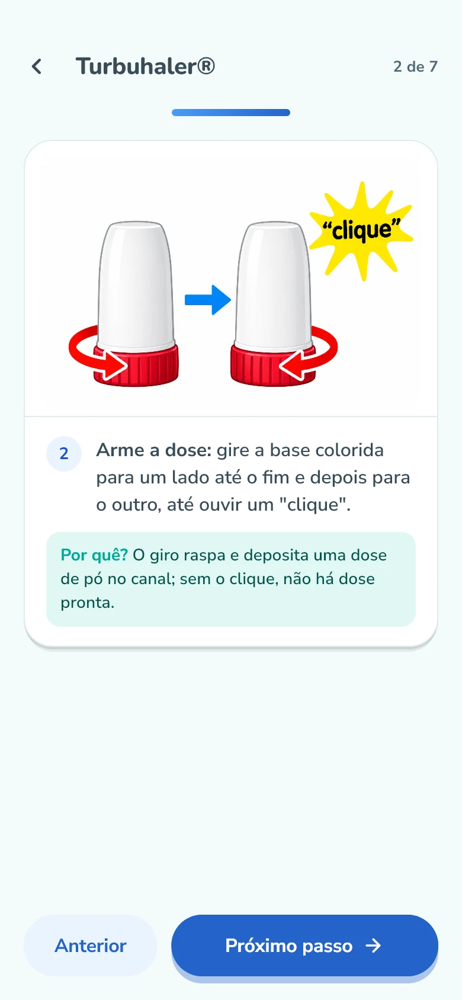
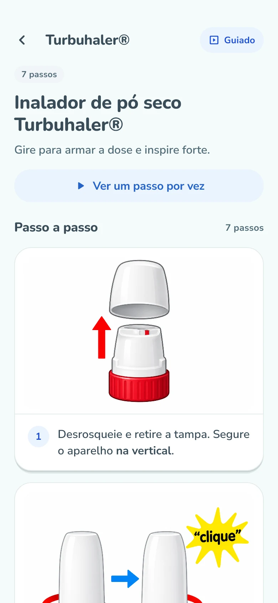
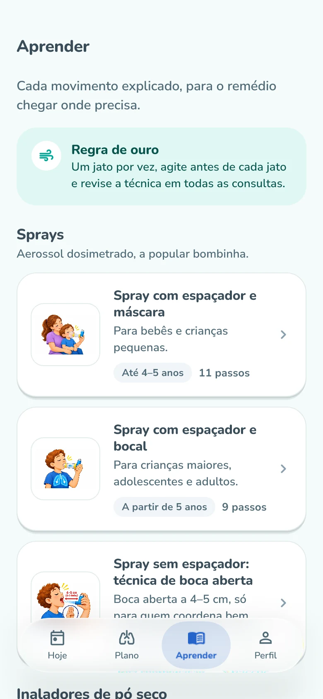
Sintomas e crises sem atrito
Gatilhos, desfecho, PFE e controle semanal.
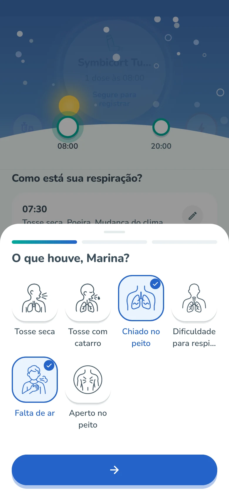
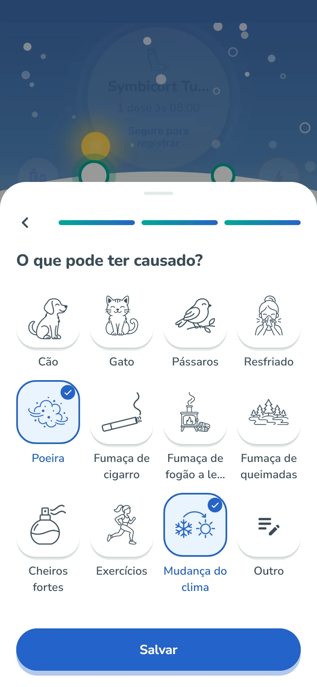
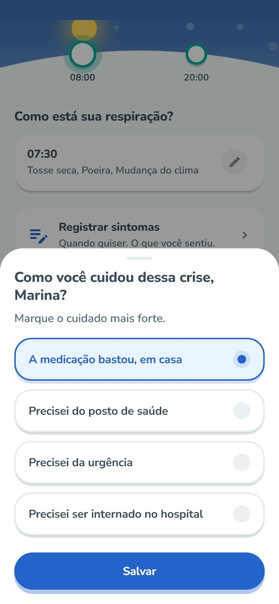
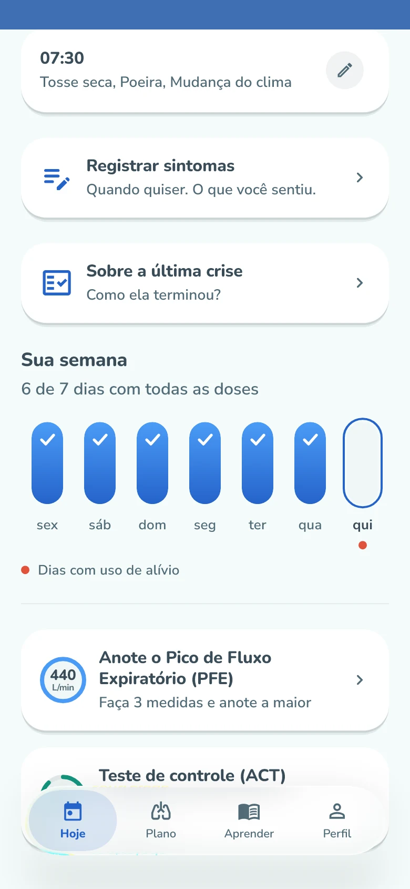
Relatório em PDF
Dados objetivos prontos para o médico.
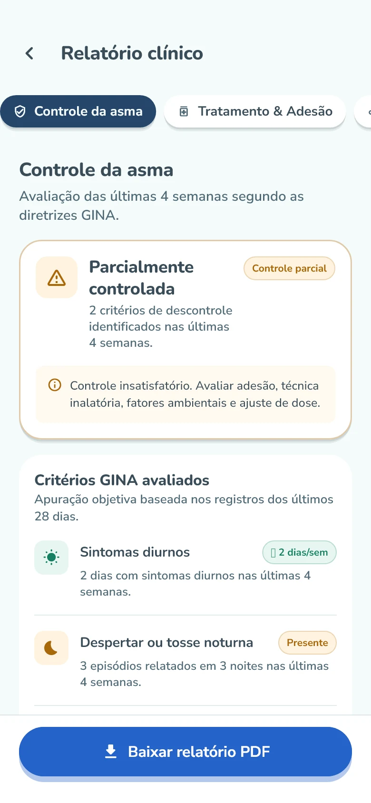
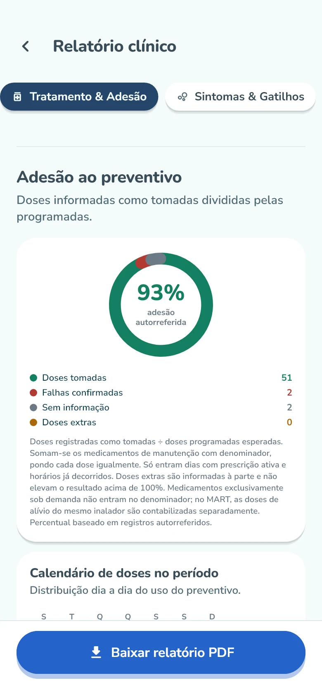
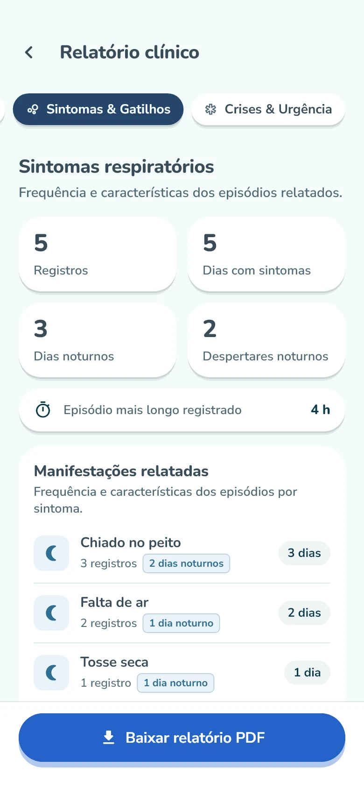
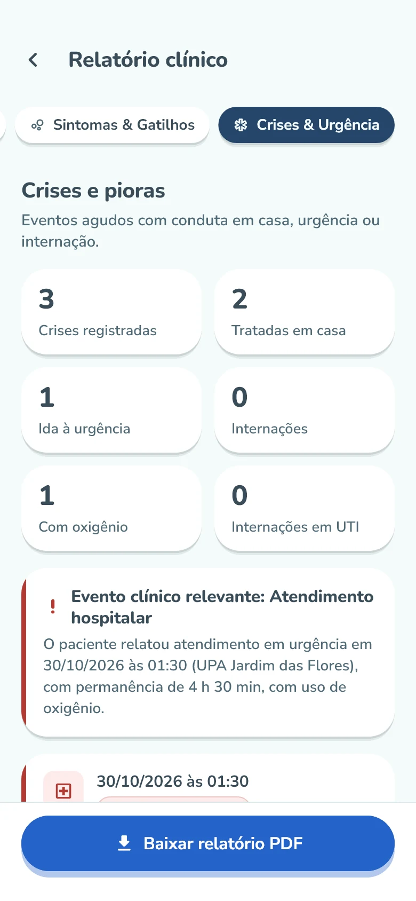
Engajamento que permanece
Sequências, escudos de proteção e conquistas.
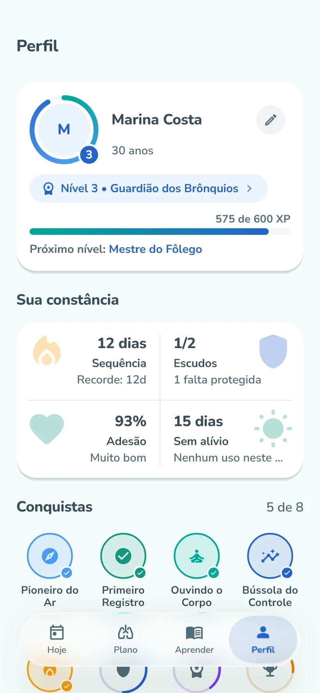
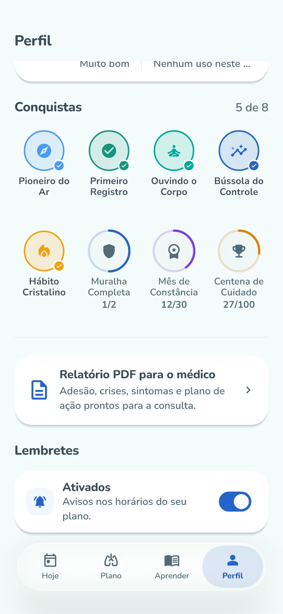
Menos crises.
Mais fôlego.
Privacidade LGPD · Android